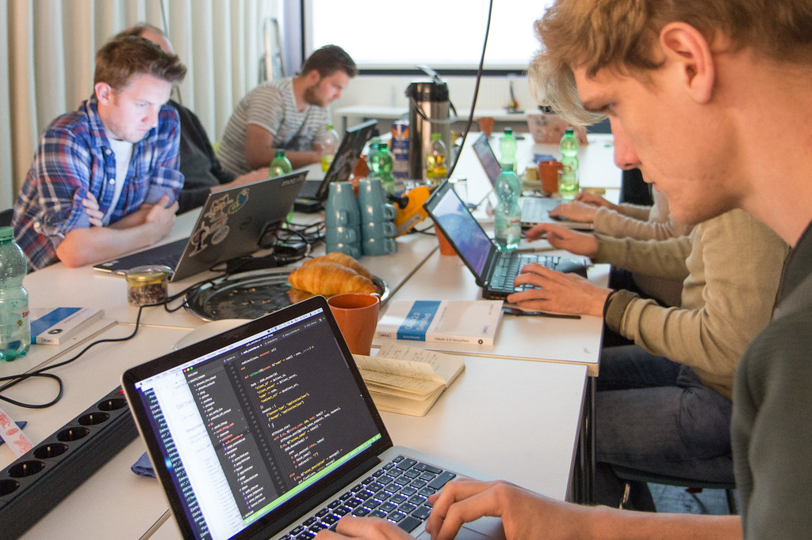
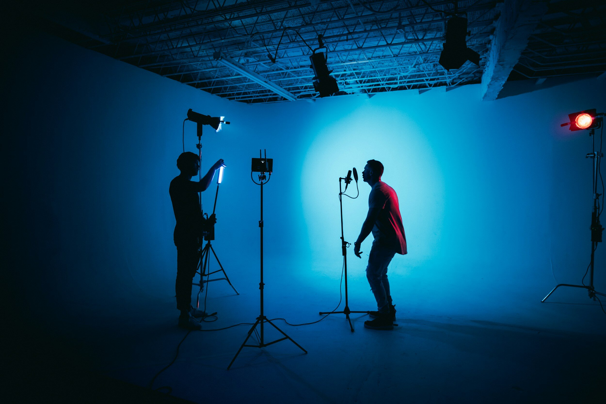
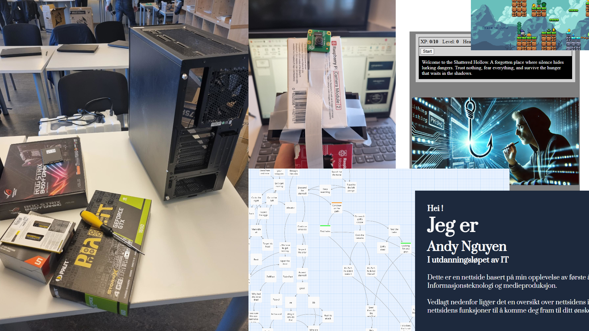

Mine opplevelser
Her ligger det en oversikt over de ulike fag/emner jeg har vært inne om på denne skoleåret.
Teknologiforståelse
Teknologiforståelse innebærer masse forskjellig blant emnet av teknologi. Vi har vært inne om mye teoretisk, og samt har drevet med prosjekter. Lyst å se for deg hva vi har drevet med?
Se her

Produksjon og historiefortelling
Produksjon og historiefortelling er en fag som innebærer arbeid og produksjon av medie. Blant skoleåret fikk vi jobbe med ulike verktøy/teknikk som føres i medieproduksjon. Lyst å se mer?
Se her

Konseptutvikling og programmering
Konseptutvikling og programmering går dypt innenfor emnet av nettside oppsett, og grunnleggende programmerings ferdigheter. Vi har lært blant annet om HTML, CSS og JavaScript. Lyst å høre mer?
Se her

Yrkesfaglig fordypning
Yrkesfaglig fordypning, oftest forkortet til YFF er en fag som innebærer mest om å ha oversikt og opplæring for framtiden. Vi har fått utplassering til ulike firma, besøkt virksomheter. Og har dokumentert vår opplevelse blant faget med et blogg. Lyst å vite mer?
Se her

Prosjekter/praksisuke
Denne feltet går dypt utover de ulike prosjekter vi har drevet med dette skoleåret og nemlig praksisopplevelsen vi hadde for 3 uker. Blant prosjekter, inneholder det prosjekter som vi jobber med tverrfaglig mellom to eller flere fag, eller prosjekter på en fag. Sjekk ut de ulike prosjekter jeg har drevet med.
Se her
